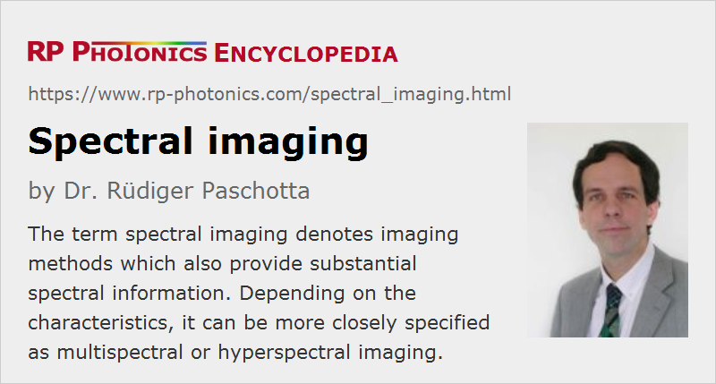

Spectral Imaging
Definition: imaging which also provides spectral information
Alternative term: spectroscopic imaging
German: spektral aufgelöste Bildgebung
Category: vision, displays and imaging
How to cite the article; suggest additional literature
Author: Dr. Rüdiger Paschotta
The term spectral imaging (or spectroscopic imaging) denotes imaging methods which also provide a substantial amount of spectral information – not necessarily whole optical spectra, but at least images with multiple spectral channels. Instruments for spectral imaging can either be regarded as cameras with enhanced spectral resolution features or as imaging spectrometers.
In principle, one might also consider color photography as means for spectral imaging, but many instruments in that area go much further concerning spectral resolution.
Spectral imaging can be done with very different distance ranges. It has originally been developed in the context of remote sensing, e.g. applied with airborne imaging instruments or on space satellites, but it can also be applied on smaller scales e.g. in medical imaging or even be implemented with microscopes.
Spectral imaging methods often require a substantial amount of data processing:
- First of all, the amount of generated raw data can be large. For example, consider hyperspectral imaging (see below) with a spatial image resolution of 1024 × 1024 pixels and 1000 spectral channels; each image then contains over 1 billion intensity values, each one with e.g. 16 bits. Lossy compression algorithms, one may reduce that to far below 1 GB of data, which however is still substantial.
- Some methods of image acquisition require sophisticated computations for obtaining the actual spectral images.
- Often, one needs to apply refined algorithms to the image data in order to extract the actually desired information – for example, searching for certain spectral features, possibly in combination with spatial features, in order to identify certain objects. Instead of storing the raw data, one may then store far more compact data indicating the actual information of interest. However, it can be desirable to keep the option of later post-processing of the raw data.
Different methods can be used to visualize the obtained results. A limiting factor is the limited spectral resolution of the human eye; particularly for hyperspectral images, the human eye is unable to gather the full spectral information, and the same holds for typical displays, color printers and the like. Therefore, one may for example display monochrome images with a variable wavelength, i.e., selecting only one wavelength channel at a time, or some combination of channels. Alternatively, one may use a fixed or variable false color scale for visualizing a certain aspect, possibly one resulting from more or less sophisticated processing of the data (such as using differences or ratios of intensities recorded in different channels).
Multispectral versus Hyperspectral Imaging
Methods are called multispectral imaging when they provide at least several different wavelengths channels. Typically, these do not have a substantial overlap (in contrast, for example, to RGB image sensors), and often they are not contiguous, i.e., in between the wavelength channels there are spectral regions with negligible responsivity. (For example, one may choose not to utilize spectral bands with poor atmospheric transmission.) The different wavelength bands may differ substantially in terms of their width and the achieved sensitivity. Often, one includes some wavelength bands outside the visible spectral region, i.e., in the infrared or ultraviolet region.
The term hyperspectral imaging is applied in cases where one typically has a large number of more or less equidistant wavelength channels, normally forming a contiguous band, so that one obtains a full optical spectra. However, the boundary between the two classes of methods is not exactly defined.
For more details, see the articles on multispectral imaging and hyperspectral imaging.
Performance Figures
In the following, we discuss the most important performance figures of instruments for spectral imaging.
Spatial and Spectral Resolution
As any imaging instrument, spectral imaging instruments have a limited spatial resolution – often determined by the number of pixels of some kind of image sensor.
The second key performance parameter is the spectral resolution. While multispectral imaging devices often have relatively broad wavelength bands, e.g. with a width of 20 nm or even 100 nm, hyperspectral imagers may provide better wavelength resolution, for example a few nanometers or even less.
In order to limit the amount of data to be processed, one will often accept some compromises concerning the spatial and/or spectral resolution.
Sensitivity
Instruments differ substantially in terms of the sensitivity, i.e., their ability to record spectrally resolved images with a limited amount of light input. Note that sensitivity becomes tentatively more critical in situations where a large number of spectral channels is used. Assuming broadband input light, one then obtains less optical power in each wavelength channel.
Particularly high sensitivities are required in astronomy in order to limit the required observation time. One then often tries to implement instruments which can utilize as much of the incoming light as is possible. This may require more than only utilizing highly sensitive photodetectors. For example, one tries to avoid scanning operations, where light is collected only from one line or even only one point at a time.
Motion Artifacts
Depending on the method of image acquisition, various types of motion artifacts can occur, when either the object or the imaging instrument is moving. Those artifacts are best suppressed with snapshot imagers which take whole spectral images within a quite limited exposure time.
It is sometimes feasible to computationally remove motion artifacts in cases with longer exposure times and possibly sequential acquisition e.g. of different wavelength bands – particularly if the movement for example of the imaging instrument is continuous and well known.
Applications of Spectral Imaging
There is a wide range of applications of spectral imaging methods; some examples:
- Multispectral and hyperspectral imagers can be used in agriculture for assessing the health of crop e.g. with a multispectral camera on a drone. Also, similar methods are suitable for identifying spoiled fruit or foreign materials.
- Airborne and space-based spectral imaging instruments are used for geological surveys, for example for finding ores or oil reservoirs, and for environmental monitoring.
- Detailed spectroscopic image information can support doctors in the area of medical diagnostics.
- Similarly, various kinds of conditions of interest can be identified in areas of industrial processing.
- Other applications are in forensic science, in biomedical research and in the investigation of ancient pieces of art.
More applications are explained in the articles on multispectral imaging and hyperspectral imaging.
Questions and Comments from Users
Here you can submit questions and comments. As far as they get accepted by the author, they will appear above this paragraph together with the author’s answer. The author will decide on acceptance based on certain criteria. Essentially, the issue must be of sufficiently broad interest.
Please do not enter personal data here; we would otherwise delete it soon. (See also our privacy declaration.) If you wish to receive personal feedback or consultancy from the author, please contact him e.g. via e-mail.
By submitting the information, you give your consent to the potential publication of your inputs on our website according to our rules. (If you later retract your consent, we will delete those inputs.) As your inputs are first reviewed by the author, they may be published with some delay.
See also: imaging, spectroscopy, multispectral imaging, hyperspectral imaging
and other articles in the category vision, displays and imaging
|  |
If you like this page, please share the link with your friends and colleagues, e.g. via social media:
These sharing buttons are implemented in a privacy-friendly way!